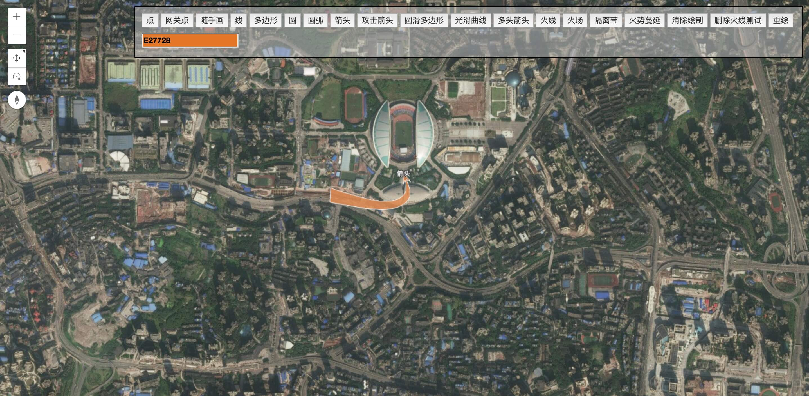
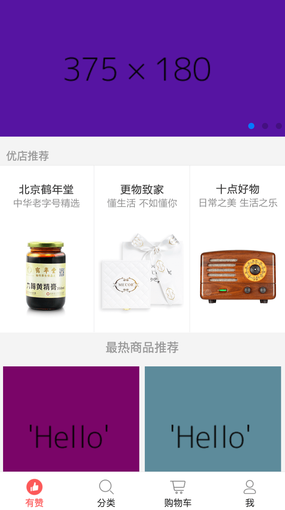
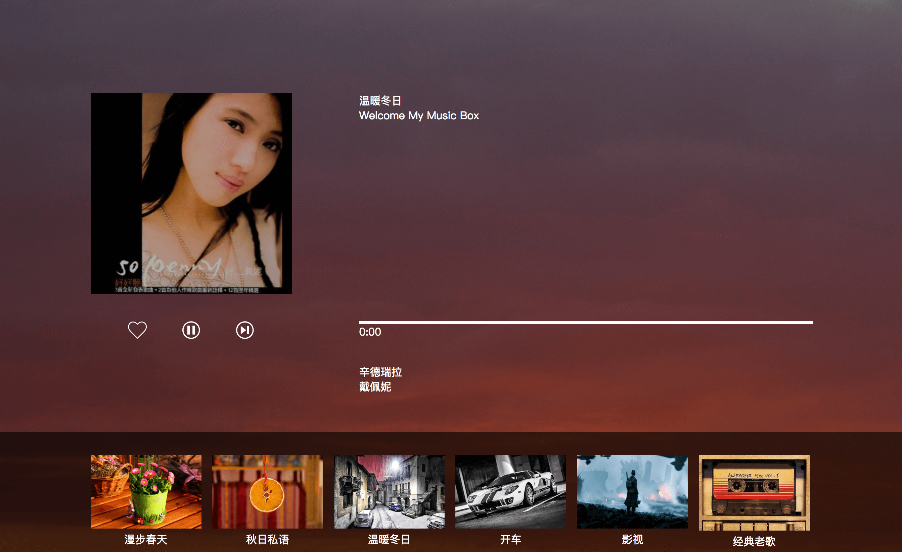

李封昊
Details.联系方式
- Tel: 177-8425-3248
- Email: 464385492@qq.com
- 微信: lifenghao789
- QQ: 464385492
Skills.技能清单
-
HTML/CSS
掌握HTML5/CSS3新特性，包括但不限于动画、3D转换、Flex布局、CSS3伪类等，能够编写语义化的 HTML，模块化的 CSS，完成较复杂的布局，像素级还原设计稿。
掌握REM、EM、媒体查询，可以实现移动端页面的响应式。
-
JavaScript
掌握一些重要的概念如原型、闭包、原型链、面向对象、异步等。
掌握DOM操作、Ajax原理。
熟悉部分ES6语法，并能在实际项目中应用。
能运用模块化、面向对象的方式编程。
-
jQuery
熟悉jQuery的应用，包括但不限于jQuery选择器、DOM操作、$.ajax、jQuery插件封装等。
-
Vue
熟练使用vue,了解Vue框架的基本原理。
有Vue开发经验,熟练使用vue-router,vuex,vue-cli。
-
Webpack/Gulp/dojo
了解Webpack、Gulp和dojo的操作流程，有实际应用经验。
-
后端
了解Web服务器相关知识，如Node.js。
熟悉Http协议。
独立开发node.js api接口。
独立开发node.js开发爬虫。
其他
Profile.基本信息
- 李封昊 | 男 | 1990
- 工作年限： 3年
- Github: https://github.com/lfhwnqe
- 博客: https://www.jianshu.com/u/c9d1c591e337
- 我是一个对前端和IT由衷热爱的前端工程师。 具有很强的学习能力和技术敏感度，有强烈的责任心和进取心，乐于学习和技术分享。 我目前正在寻找前端工程师岗位的工作机会，希望借此为贵司献上我的一点绵薄之力，快招我到碗里来吧！
Experience.工作及项目经验
-
小猪webapp 源代码 Demo
基于Vue框架开发的小猪webapp单页面应用，仿小猪app制作。使用vue-cli搭建。
使用webpack配置项目文件，打包，安装依赖，后台数据 mock来自rap2。
使用vue-router路由，封装轮播组件、导航组件等,使用了ES6语法。
技术栈：Vue + Webpack + vue-router + rap2 + ES6 + element-ui
-
arcgis 3d地图 源代码 Demo
基于arcgis构建的3d地图，采用面向对象编程，代码精简易读，且实现了多种绘图功能，包括画点，画线，随手画，多边形，圆形，圆弧，箭头，多头箭头， 曲线，圆滑多边形，火线，火场，隔离带，计算火势蔓延趋势，清除绘制，定制绘图颜色，在地图图层插入图片等功能。 功能强大，切在实际项目中支持单个绘图的删除与重新绘制。
技术栈：原生js + Ajax + CSS3 + Html5 + Flex + arcgis + dojo
 -
node接口服务器 源代码
使用node.js、express创建的服务器
根据前端传输的数据进行相应的处理。根据操作对数据库里的数据进行增、删、改、查
技术栈： node.js + express + ES6 + sqlite
-
有赞商城 源代码 Demo
基于Vue框架开发的有赞商城多页面应用。使用vue-cli搭建。
使用webpack配置项目文件，打包，安装依赖，后台数据 mock来自rap2，封装轮播组件、导航组件等,使用了ES6语法。
项目还原了有赞商城包含主页列表，懒加载，轮播，分类页面分页，复杂的购物车栏。
使用vue-router路由，使用vuex进行数据通信。
技术栈：Vue + Webpack + vue-router + rap + ES6 + mint-ui
 -
豆瓣电影 源代码 Demo
使用豆瓣电影api和jquery制作的电影排行榜。
使用ajax向豆瓣api发送请求。
创建字符串模版，方便对数据进行渲染。
实现了排行榜、北美、搜索等功能。
代码风格漂亮简洁。
排行榜页面实现了懒加载。
技术栈： HTML5 + CSS3 + JavaScript + jquery + ajax
-
在线fm音乐播放器 源代码 Demo
使用原生js实现的音乐播放器，通过ajax获取api数据进行音乐播放，音乐切换功能，进度条显示功能，暂停功能，切换类型功能
技术栈： HTML5 + CSS3 + JavaScript + ajax
 -
其他作品
-
1. 企业官网
自己制作的一个企业官网模板
-
2. 相册网站demo
css3实现相册网站
-
3. 小型音乐播放器
使用javascript css3实现的音乐播放器
-
4. 导航栏demo
使用css属性实现的导航栏
-
5. 登陆栏特效
使用了Html5和CSS3新特性实现特殊效果。
-
-
重庆英卡电子有限公司
2017/11~至今
英卡电子，是具有高校背景、创新基因的物联网类民营高新技术企业，掌握野外环境长寿命自助供能、任意拓扑结构无线组网、 复合传感智能三大野外环境传感网核心技术，达到国际先进、国内领先水平，自主研发了国内唯一的系列红外火灾探测器、小气候环境探测器、物联网网关等智能硬件产品
主要业绩:1. 由我完成公司网站arcgis部分的代码，包括复杂程度非常高的事件管理，数据管理，gis绘图，绘图数据记录， 精简绘制数据并且进行重新绘制
-
重庆住多多科技有限公司
2017/10~2017/11
住多多是一款租房电商APP，是一个基于解决年轻人租房痛点的租房平台，致力于为用户创造“0佣金、真房源、灵活租”的服务价值。它被称为手机“租房神器”，是年轻人喜爱的互联网租房品牌。
主要业绩:1. 由我完成公司的住多多移动官网
2. 完成公司双11活动的制作，并取得了良好的效果
项目经验
工作经历
Education.教育背景
-
重庆化工职业学院 /专科
2011.9-2014.6